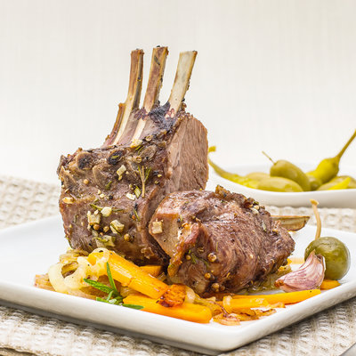

Viking Lamb

Description:
Can't go wrong with a big ol leg of lamb! Eat this hearty dish with whatever sides you have.
It is sure to delight everyone in the family!
Ingredients:
- 1 Leg of lamb
- 10-12 leaves from white turnips, washed and still wet
- Garden Angelica (wild celery)
- Lemon thyme
- salt
- chives
- garlic
- onion
- mead
Steps:
- Mix the herbs in a mortar to make a pesto. Lay out turnip leaves on the table.
- Remove the bone from the leg of lamb and flatten it out. Add the herb pesto to
cover and roll up the piece of meat. Then wrap it tightly in the turnip
leaves and tie with lime bast to make a parcel.
- Place lamb on an iron skillet and roasted for just under 2 hours in the back of the oven,
where the temperature is at its highest, about 200f, which kills the
bacterias. Allow 1 hours per kilo in cooking time.
- Remove the lamb from the oven, discard the burnt leaves to reveal the tender meat inside.
Home